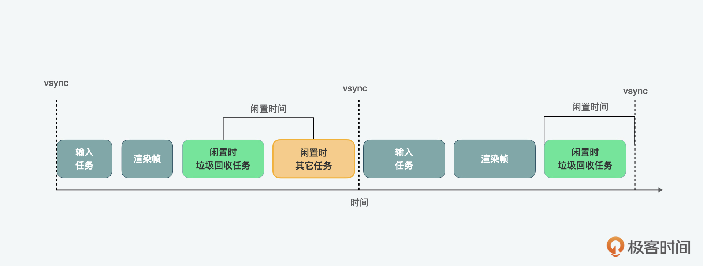
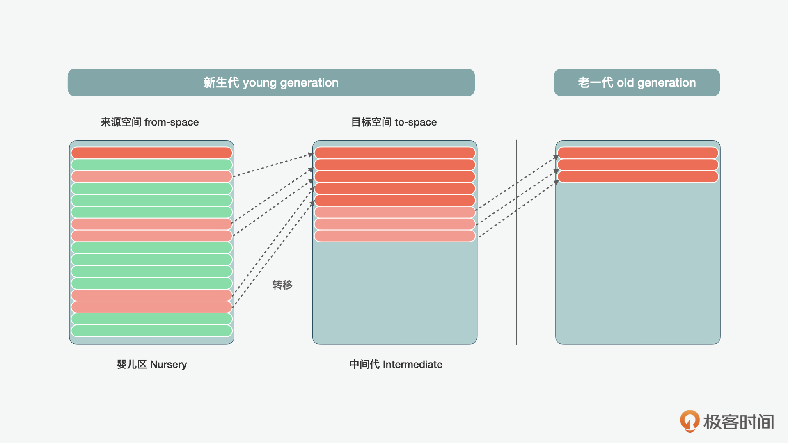
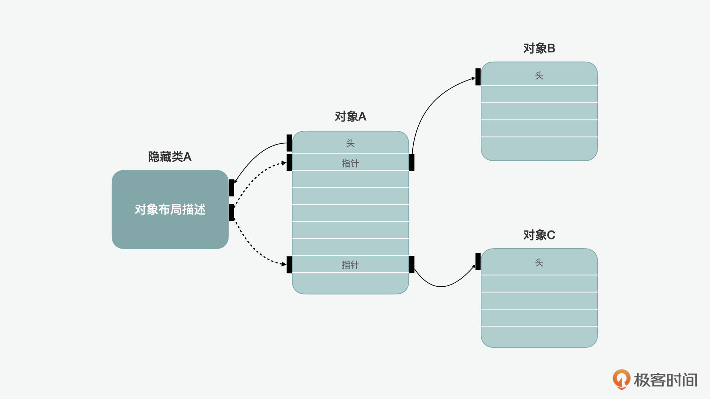
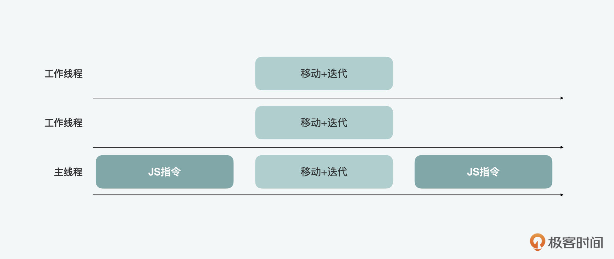
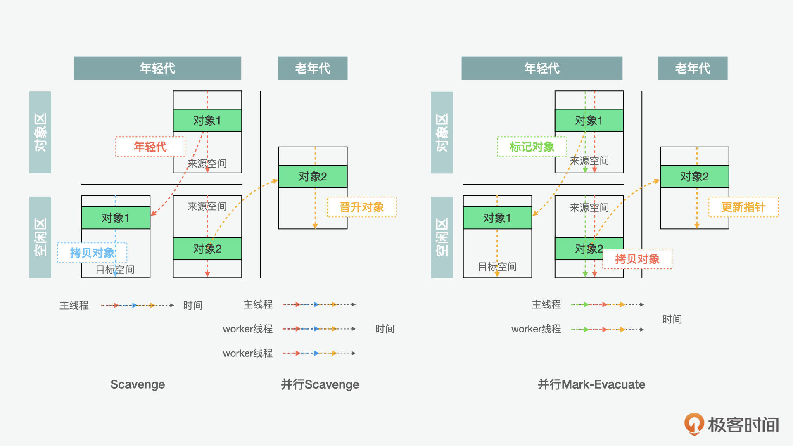
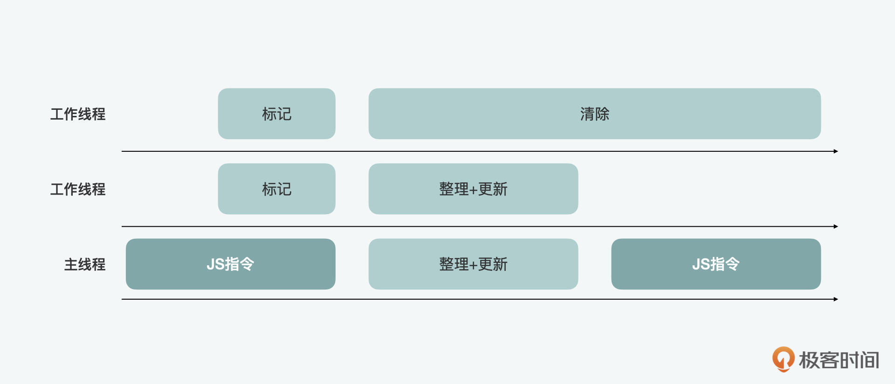
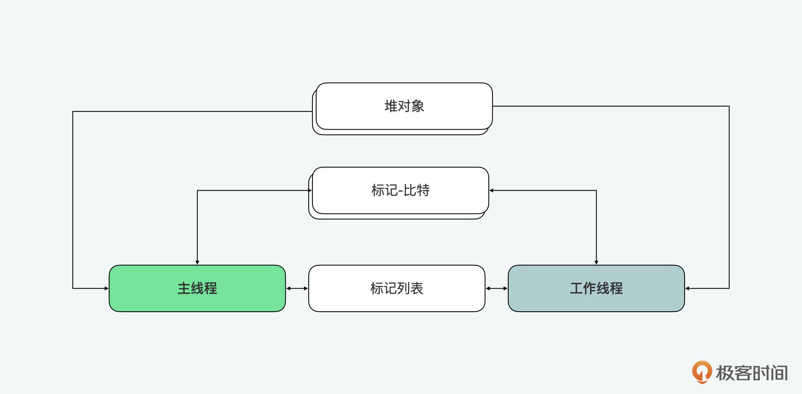
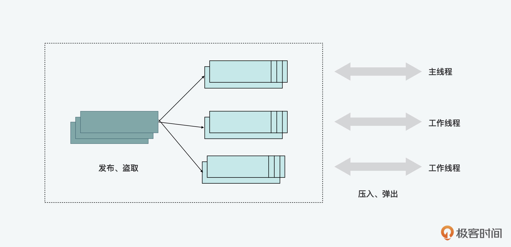
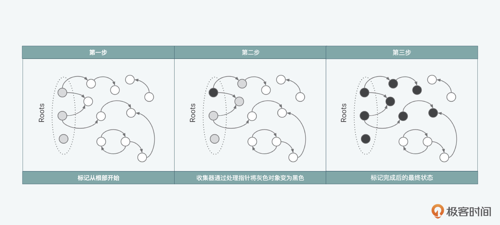

- 00 开篇词 JavaScript的进阶之路.md
- 01 函数式vs.面向对象：响应未知和不确定.md
- 02 如何通过闭包对象管理程序中状态的变化？.md
- 03 如何通过部分应用和柯里化让函数具象化？.md
- 04 如何通过组合、管道和reducer让函数抽象化？.md
- 05 map、reduce和monad如何围绕值进行操作？.md
- 06 如何通过模块化、异步和观察做到动态加载？.md
- 07 深入理解对象的私有和静态属性.md
- 08 深入理解继承、Delegation和组合.md
- 09 面向对象：通过词法作用域和调用点理解this绑定.md
- 10 JS有哪8种数据类型，你需要注意什么？.md
- 11 通过JS引擎的堆栈了解闭包原理.md
- 12 JS语义分析该用迭代还是递归？.md
- 13 JS引擎如何实现数组的稳定排序？.md
- 14 通过SparkPlug深入了解调用栈.md
- 15 如何通过哈希查找JS对象内存地址？.md
- 16 为什么环形队列适合做Node数据流缓存？.md
- 17 如何通过链表做LRU_LFU缓存？.md
- 18 TurboFan如何用图做JS编译优化？.md
- 19 通过树和图看如何在无序中找到路径和秩序.md
- 20 算法思想：JS中分治、贪心、回溯和动态规划.md
- 21 创建型：为什么说Redux可以替代单例状态管理.md
- 22 结构型：Vue.js如何通过代理实现响应式编程.md
- 23 结构型：通过jQuery看结构型模式.md
- 24 行为型：通过观察者、迭代器模式看JS异步回调.md
- 25 行为型：模版、策略和状态模式有什么区别？.md
- 26 特殊型：前端有哪些处理加载和渲染的特殊“模式”？.md
- 27 性能：如何理解JavaScript中的并行、并发？（上）.md
- 28 性能：如何理解JavaScript中的并行、并发？（下）.md
- 29 性能：通过Orinoco、Jank Busters看垃圾回收.md
- 30 网络：从HTTP_1到HTTP_3，你都需要了解什么？.md
- 31 安全：JS代码和程序都需要注意哪些安全问题？.md
- 32 测试（一）：开发到重构中的测试.md
- 33 测试（二）：功能性测试.md
- 34 测试（三）：非功能性测试.md
- 35 静态类型检查：ESLint语法规则和代码风格的检查.md
- 36 Flow：通过Flow类看JS的类型检查.md
- 37 包管理和分发：通过NPM做包的管理和分发.md
- 38 编译和打包：通过Webpack、Babel做编译和打包.md
- 39 语法扩展：通过JSX来做语法扩展.md
- 40 Polyfill：通过Polyfill让浏览器提供原生支持.md
- 41 微前端：从MVC贫血模式到DDD充血模式.md
- 42 大前端：通过一云多端搭建跨PC_移动的平台应用.md
- 43 元编程：通过Proxies和Reflect赋能元编程.md
- 结束语 JavaScript的未来之路：源于一个以终为始的初心.md
29 性能：通过Orinoco、Jank Busters看垃圾回收
你好，我是石川。
在前两讲中，我们从多线程开发的角度了解了JavaScript中的性能优化。
今天，我们再来看一下JavaScript中内存管理相关的垃圾回收（garbage collection）机制，以及用到的性能优化的相关算法。
实际上，在JS语言中，垃圾回收是自动的，也就是说并不是我们在程序开发中手工处理的，但是，了解它对理解内存管理的底层逻辑还是很有帮助的。特别是结合我们前面两节课讲到的，在前端场景中，当我们的程序使用的是图形化的WebGL+Web Worker的多线程来处理大量的计算或渲染工作时，了解内存管理机制则是非常必要的。特别提醒一下，这节课会涉及到比较多的理论和底层知识，一定要跟紧我们的课程节奏啊。
闲置状态和分代回收
我们在上一讲说到并行和并发的时候，有讲到过，前端的性能指标中，我们通常关注的是流畅度和反应度。在理想的状态下，为了获得丝滑流畅的体验，我们需要达到60fps，也就是每帧在16.6ms内渲染。在很多的情况下，浏览器都可以在16.6ms内完成渲染，这个时候，如果提前渲染完了，剩下的时间我们的主线程通常是闲置（idle）的状态。而Chrome通常会利用这个闲置的时间来做垃圾回收。通过下面的图示，我们可以更加直观地看到主线程上这些任务的执行顺序。

在内存管理中，我们有必要先了解几个概念。在垃圾回收中，有个概念是分代回收（generational garbage collector），它所做的是将内存堆（memory heap）分代，不同类型的对象被分到半空间（semi space），里面包括了年轻代（young generation）和老年代（old generation）。
这样的分代专区，是基于垃圾回收界的一个著名的代际假说（generational hypothesis）来设置的。在这个假说当中，会认为年轻代中是较新的数据，这些数据中大多对象的生命周期都比较短；而那些在老年代中存活下来的数据，它们的生命周期又会特别长。
所以在V8中有一副一主两个垃圾回收器，分别负责年轻代和老年代的垃圾回收。
副垃圾回收器（minor GC，scavenger）的作用就是回收新生代中生命周期较短的对象，并且将生命周期较长的对象移动到老年代的半空间。年轻代空间里又包含对象区域（from-space）和空闲区域（to-space）。
这里你可能会想，为啥年轻代里还要再分两个区呢？因为这样方便对数据进行处理。在对象区域，数据会被标记成存活和垃圾数据。之后垃圾数据会被清除，存活数据会被晋升整理到空闲区域。这时，空闲区域就变成了对象区域，对象区域就变成了空闲区域。也就是说在不创建新的区域的情况下，可以沿用这两个区域交换执行标记和清除的工作。

而主垃圾回收器（major GC）会在老年代半空间中的对象增加到一定限度的时候，对可以清除的对象做渐进的标记。通常当页面在很长一段时间空闲时，会进行全量清理，清除的动作是由专属的清除线程来完成的，最后对于碎片化的内存还要进行整理的动作。所以整体下来，主回收器的操作流程是标记-清除-整理（mark-sweep-compact）。
在内存管理中，特别是垃圾回收中，它的底层逻辑其实很简单，总结起来其实就3点：
- 如何标记存活的对象；
- 回收扫清非存活的对象；
- 回收后对碎片进行整理。主回收器也不例外。
首先，我们先来看一下标记（mark）。标记是找到可触达对象的过程。垃圾回收器通过可触达度来判断对象的“活跃度”。这也就代表着要保留运行时（runtime）内部当前可访问的任何对象，同时回收任何无法访问的对象。标记从一组已知的对象指针开始，如全局对象和执行堆栈中当前活动的函数，称为根集。
GC将根（root）标记为存活的，并根据指针递归发现更多存活对象，标记为可访问。之后，堆上所有未标记的对象都被视为无法从应用程序访问的可回收对象。从数据结构和算法的角度，我们可以把标记看作是图的遍历，堆上的对象是图的节点（node）。从一个对象到另一个对象的指针是图的边（edge）。基于图中的一个节点，我们可以使用对象的隐藏类找到该节点的所有向外边缘。

标记完成后，在清除（sweep）的过程中，GC会发现无法访问的对象留下的连续间隙，并将它们添加到一个被称为空闲列表（free list）的数据结构中。空闲列表由内存块的大小分隔，以便快速查找。将来，当我们想分配内存时，我们只需查看空闲列表并找到适当大小的内存块即可。
清除后的下一步就是整理（compact），你可以把它想象成我们平时电脑上的硬盘碎片整理，将存活的对象复制到当前未被压缩的其它内存页中（使用内存页的空闲列表）。通过这种方式，可以利用非存活的对象留下的内存中的小而分散的间隙，这样可以优化内存中的可用空间。
V8的 Orinoco 项目是为了能不断提高垃圾回收器的性能而成立的，它的目的是通过减少卡顿（jank buster），提高浏览器的流畅度和响应度。在这个优化的过程中，V8 在副回收器中用到了并发和并行。下面，我们就分别来看看它们的原理及实现。
副回收器中使用的并行
首先，我们先来看看副回收器（minor GC，Scavenger）用到的并行回收（Scavenger Parallel）。平行回收，顾名思义，就是垃圾回收的工作是在多线程间平行完成的。相比较并发，它更容易处理，因为在回收的时候，主线程上的工作是全停顿的（stop the world）。
V8用并行回收在工作线程间分配工作。每个线程会被分到一定数量的指针，线程会根据指针把存活的对象疏散到对象空间。因为不同的任务都有可能通过不同的路径找到同一个对象并且做疏散和移动的处理，所以这些任务是通过原子性的读写、对比和交换操作来避免竞争条件的。成功移动了对象的线程会再更新指针供其它线程参考更新。

早期，V8所用到的是单线程的切尼半空间复制算法（Cheney’s semispace copying algorithm）。后来把它改成多线程。与单线程一样，这里的收集工作主要分3步：扫描根、在年轻代中复制、向老年代晋升以及更新指针。
这三步是交织进行的。这是一个类似于霍尔斯特德半空间复制回收器（Halstead’s semispace copying collector）的GC，不同之处在于，V8使用动态工作窃取（work stealing）和相对较为简单的负载均衡机制来扫描根。

在此期间，V8也曾尝试过一种叫做标记转移（Mark Evacuate algorithm）的算法。这种算法的主要优点是，可以利用V8中已经存在的较为完整的Mark Sweep Compact收集器作为基础，进行并行处理。
这里的并行处理分为三步：首先是将年轻代做标记；标记后，将存活的对象复制到对象空间；最后更新对象间的指针。
这里虽然是多线程，但它们是锁步（lock step）完成的，也就是说虽然这三步本身可以在不同的线程上平行执行，但线程之间必须在同步后再到下一阶段。所以，它的性能要低于前面说的交织完成的Scavenger并行算法。
主回收器中使用的并发
并发标记
说完了副回收器中的并行GC，我们再来看看主回收器中用到的并发标记（concurrent marking）。在主线程特别繁忙的情况下，标记的工作可以独立在多个工作线程上完成标记操作。但由于在此期间，主线程还在执行着程序，所以它的处理相比并行会复杂一些。

在说到并发标记前，我们先来看看标记工作怎么能在不同的线程间同时执行。在这里，对象对于不同的主线程和工作线程是只读的，而对象的标记位和标记工作列表是既支持读，也支持写访问的。

标记工作列表的实现对性能至关重要，因为它可以平衡“完全使用线程的局部变量”或“完全使用并发”的两种极端情况。
下图显示了V8使用基于分段标记的工作列表的方法，来支持线程局部变量的插入和删除，从而起到平衡这两种极端场景的作用。一旦一个分段已满，就会被发布到一个共享的全局池中，在那里它可以被线程窃取。通过这种方式，V8允许标记工作线程尽可能长时间地在本地运行而不进行任何同步。

增量标记
除了并发标记法之外，主回收器还用到了增量标记法，也就是利用主线程空闲时间处理增量标记的任务。为了实现增量标记，要保证之前进行一半的工作有“记忆”；同时要处理期间JavaScript对原有对象可能造成的变化。在这里，V8运用了三色标记法和写屏障。
三色标记法的原理是将从根部开始引用的节点标记成黑、灰和白色。黑色是引用到也标记处理的，灰色是引用到但未标记处理的，白色是未被引用到的。所以当没有灰色节点的时候，便可以清理，如果有灰色的，就要恢复标记，之后再清理。

因为增量标记是断断续续进行的，所以被标记好的数据存在可能被JavaScript修改的情况，比如一个被引用的数据被重新指向了新的对象，它和之前的对象就断开了，但因为垃圾回收器已经访问过旧的节点，而不会访问新的，新的节点就会因此而被记录成未被引用的白色节点。所以在这里必须做一个限制，就是不能让黑色节点指向白色的节点。而这里的限制就是通过一个写屏障来实现的。
总结
这节课我们通过V8，了解了JS引擎是如何利用闲置状态来做垃圾回收的，以及考虑到程序性能时，这种回收机制可能带来的卡顿和性能瓶颈。我们看到Chrome和V8为了解决性能问题，通过分代和主副两个回收器做了很多的优化。这里面也用到了很多并发和并行的工作线程来提高应用执行的流畅度。
虽然对于一般的Web应用，这些问题并不明显。但是随着Web3.0、元宇宙的概念的兴起，以及WebGL+Web Worker的并行、并发实现越来越普及，由此使得前端对象创建和渲染工作的复杂度在不断提高，所以内存管理和垃圾回收将是一个持续值得关注的话题。
思考题
虽然我们说JavaScript的垃圾回收是自动的，但是我们在写代码的时候，有没有什么“手工”优化内存的方法呢？
欢迎在留言区分享你的答案、交流学习心得或者提出问题，如果觉得有收获，也欢迎你把今天的内容分享给更多的朋友。我们下节课再见！
© 2019 - 2023 Liangliang Lee. Powered by gin and hexo-theme-book.